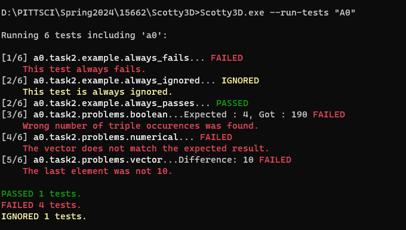

**Assignment 0 Report**
AndrewID: yueli3
(##) About this template
* You can view your writeup by opening it in a browser - right click this file and open with your browser of choice.
* Replace reference images with your own screenshots or renders when applicable.
* Include descriptions of any encountered problems and the time you spent on each task.
(##) A0T1
Step 1: Clone
Step 2: General Setup
Visual Studio:
Node:
Nest-libs:
Step 3: Build and Run

(##) A0T2
Your completion of this task will be graded based on your `test.a0.task2.problems.cpp` file and your responses to the below questions.
For each of the problems you solved in task 2, characterise the bug in your own words and explain one other scenario that may cause this
type of bug.
Problem 1: The identifiers string, cout, and endl should be prefixed with the std namespace, resulting in std::string, std::cout, and std::endl.
Problem 2: The result of the formula y / factor is an integer because both y and factor are of integer data type. To ensure the function operates as expected, we can cast factor to a float, resulting in x < (y / (float)factor)
Problem 3: The function one_to_ten.end() points to the position following the last element in the vector one_to_ten, not to the last element itself. If we want to access the last element, we can use one_to_ten.back() or *(--one_to_ten.end()).
Problem 4: If vec1.at(i) is equal to vec2.at(j), the return value is 1. Conversely, the return value is 0 when vec1.at(i) does not equal vec2.at(j). To check if three numbers are identical, we should use the condition vec1.at(i) == vec2.at(j) && vec1.at(i) == vec3.at(k).
(##) A0T3
You do not need any screenshots for this task. Your completion will be graded based on your `src` submission.
(##) Feedback
Use this section to provide feedback about the assignment.